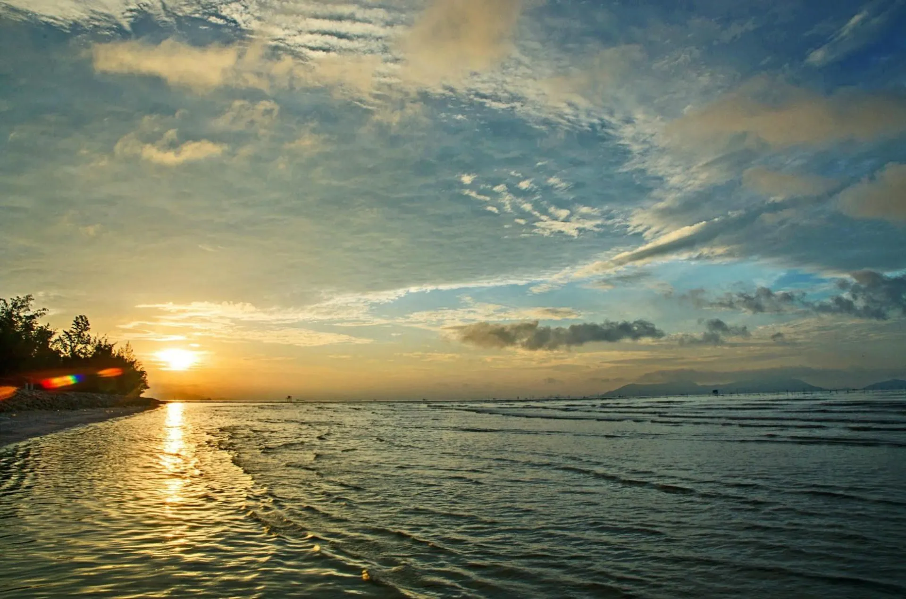

Nằm trong thị trấn Cần Thạnh, biển Cần Giờ là bãi biển duy nhất của thành phố Hồ Chí Minh mang vẻ đẹp hoang sơ, mộc mạc. Khác với những bãi biển khác, biển Cần Giờ nhiều phù sa nên nước ở đây luôn có màu đen. Tuy nước không trong xanh nhưng bãi biển Cần Giờ lại có con đường ra biển bằng đá hoang sơ và độc đáo vô cùng thu hút du khách.
Các Thông tin chi tiết về biển Cần Giờ
Cần Giờ được mệnh danh là “ốc đảo xanh” hay “lá phổi xanh” của Sài Gòn. Ở huyện này nổi bật với biển Cần Giờ đặc biệt hơn những bãi biển khác là bãi cát màu đen huyền bí, ấn tượng, bãi biển “4 không” đầy hấp dẫn.
Nằm cách trung tâm thành phố chỉ khoảng 50 km với hơn 1 giờ 30 phút chạy xe, biển Cần Giờ thuộc địa phận của làng Thạnh Thới, Long Hòa, huyện Cần Giờ, Thành phố Hồ Chí Minh.
Các đặc điểm chính:
|
Biển Cần Giờ vắng lặng, yên bình hơn so với những bãi biển khác. Các dịch vụ chưa phát triển nên bạn hoàn toàn có thể tận hưởng không gian thoải mái, thư giãn.
Màu cát đen đặc trưng chính bởi đây là vùng biển được bồi đắp nhiều phù sa. Vậy nên, nếu muốn tắm biển, bạn sẽ phải đi bộ ra một đoạn khá xa.
Ở biển Cần Giờ, việc mua bán ở đây là “thuận mua vừa bán”, tuyệt đối không chèo kéo khách. Bạn cũng hoàn toàn yên tâm về mức chi phí khi ăn uống hay sử dụng các dịch vụ bởi kinh doanh ở đây có tiêu chí không hét giá, khách không phải mặc cả quá nhiều.
Một số hình ảnh tiêu biểu về Biển Cần Giờ:
|

|